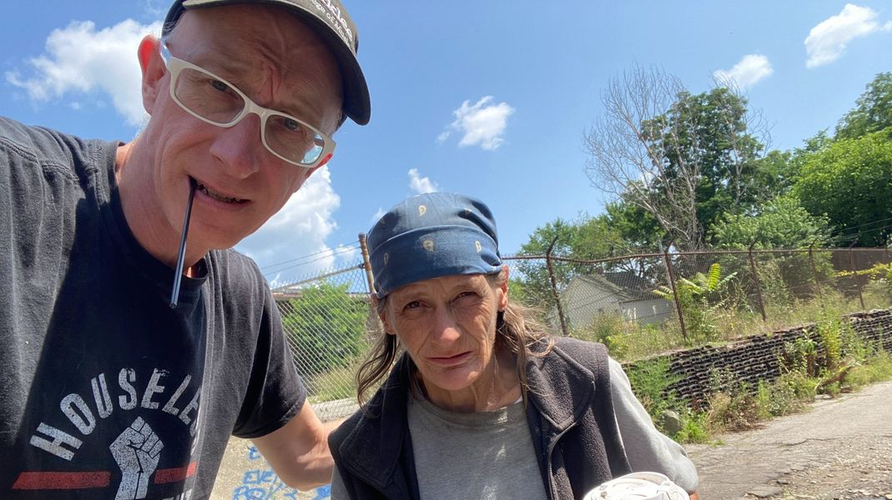

Timeline photos
I shared with you a story about a woman named Chris who lives at our homeless house.
She is seriously mentally ill and uses drugs regularly.
She will yell at you about who knows what at any given time. But she is truly loved in the community. People look after her and make sure she is ok.
All she wants is a chair to sleep in. She doesn't want, and won't take anything else.
A couple of her (potential) family members wanted to see if it was truly her who lives with us. I'm pretty sure it is. So I thought I'd share this picture I took with her a couple days ago.
A family member wrote to me and said this:
She loves instant coffee, dogs, gardening, and she loved going through the trash in our neighborhood and making things her own. She used to be an amazing artist as well.
That definitely sounds like our Chris (though I didn't know about the instant coffee. That probably can be arranged.)
But here's the thing... there have been some big issues at our house over the last few months. Because of that I haven't raised any money or asked for any rent from people who live at our house.
We are now over $1900 in debt to our utilities.
They have already taken our trash cans and I'm quite sure they are going to turn off the other utilities any day now.
I go into this in greater detail on this donation request post:
https://donorbox.org/homelessvillage-2
I almost was ready to quit this entire thing earlier this summer. I had lost the election for city council in a landslide (for the other guy). Our house was being over run by sex work, drug sales and burning wire.
No one would listen to me in that house. I was just SO over it all.
But I went on vacation and got a little perspective.
I cannot in good conscience give up on these people. I have to keep fighting.
We have 3 people currently living in the house. I talk about them and the entire situation in greater detail here:
https://donorbox.org/homelessvillage-2
Even if you don't have any money to spare right now, please check out the story. We must face the truth of our world.
Thank you for everything.